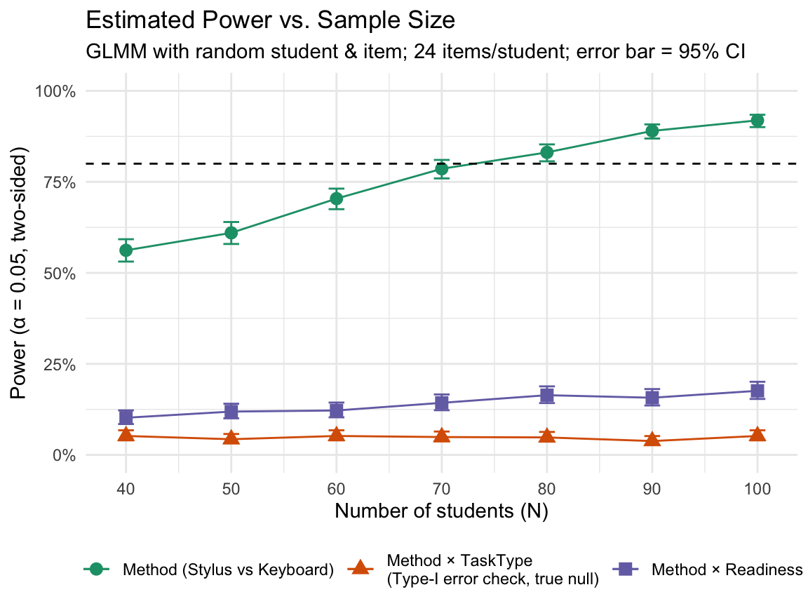

library(tidyverse)
library(glue)
library(lme4) # for glmer()ERFP Proposal: Power for Stylus vs. Keyboard (AB/BA)
Setup
This document requires the following packages:
For reproducibility, we fix an arbitrary seed:
set.seed(1234)Model
We analyze item-level accuracy—coded as \(Y_{is}\in\{0,1\}\) for item \(i\) answered by student \(s\) (1 = correct, 0 = incorrect)—using a generalized linear mixed model (GLMM) that accounts for the following two features:
- Repeated responses per student
- Varying difficulty across items
The model incorporates the following fixed effects:
- \(\text{Method} \in \{\text{keyboard}, \text{stylus}\}\): Primary effect of interest.
- \(\text{Period} \in \{1, 2\}\): Practice/carryover control in the experiment’s AB/BA crossover design.
- \(\text{Sequence} \in \{\text{AB}, \text{BA}\}\): Crossover order.
- \(\text{TaskType} \in \{\text{retention}, \text{evaluation}\}\). We include task type as a fixed effect because, a priori, retention tasks are expected to be easier than evaluation tasks.
- \(R\): Individual stylus readiness, a student-level moderator reflecting readiness to use a stylus rather than a keyboard; standardized as a z-score.
As random effects, the model includes intercepts for these variables:
- Item \(i\)
- Student \(s\)
Because correctness is Bernoulli distributed, we use the canonical logit link and model the log-odds of a correct response as a linear function of the fixed effects. To allow the method effect to vary by task type and by individual stylus readiness, we include the interactions \(\text{Method}\times\text{TaskType}\) and \(\text{Method}\times R\):
\[\begin{align*} \text{logit}\,\Pr(Y_{is}=1) = & \beta_0 +\beta_1\,\text{Method}_{is} +\beta_2\,\text{Period}_{is} +\beta_3\,\text{Sequence}_{s}\\ & +\beta_4\,\text{TaskType}_{i} +\beta_5\,(\text{Method}\times\text{TaskType})_{is}\\ & +\beta_6\,R_s +\beta_7\,(\text{Method}\times R)_{is}\\ & +u_s+v_i, \end{align*}\]
with \(u_s\sim\mathcal N(0,\sigma^2_\text{student})\) and \(v_i\sim\mathcal N(0,\sigma^2_\text{item})\).
The primary coefficient of interest is \(\beta_1\), the stylus–keyboard effect on the log-odds scale evaluated at \(R_s=0\) (the moderator’s mean) and the following reference levels:
- \(\text{Method}=\text{keyboard}\)
- \(\text{Period}=1\)
- \(\text{Sequence}=\text{AB}\)
- \(\text{TaskType}=\text{retention}\)
Simulating a Single Experiment
The following code chunk defines simulate_once(), which generates one synthetic data set for the 2-period AB/BA crossover at the item level. Each student completes both task types under each method (a within-student 2×2 layout). The primary model estimates additive main effects; a secondary model tests the \(\text{Method} \times \text{TaskType}\) interaction, using GLMMs. The model optionally includes a z-scored moderator \(R\), representing individual stylus readiness. The function returns a one-row tibble with p-values for the \(\text{Method}\) effect and the interactions \(\text{Method} \times \text{TaskType}\) and \(\text{Method} \times R\).
simulate_once <- function(
n_students,
items_per_cell = 6, # per combinations of method and task type
p0_keyboard_ret = 0.65, # baseline accuracy (keyboard + retention)
odds_ratio_method = 1.35, # stylus vs keyboard (average treatment effect)
odds_ratio_task_eval_vs_ret = 0.80, # Evaluation harder if < 1
odds_ratio_method_x_task = 1.00, # interaction of method and task
beta_period = 0.00, # carryover/practice (Period 2 vs 1)
beta_sequence = 0.00, # AB vs BA
include_moderator = TRUE, # generate a student-level moderator
beta_method_x_mod = log(1.10), # method-and-moderator interaction per SD
sd_student = 0.50, # random intercept SD (student, log-odds)
sd_item = 0.60) { # random intercept SD (item, log-odds)
# Fixed effects (log-odds)
b0 <- qlogis(p0_keyboard_ret)
b_method <- log(odds_ratio_method)
b_task <- log(odds_ratio_task_eval_vs_ret)
b_mxt <- log(odds_ratio_method_x_task)
# Students and items
half <- n_students %/% 2
extra <- if (n_students %% 2) sample(c("AB", "BA"), 1) else NULL
students <-
tibble(
student_id = as.character(seq_len(n_students)),
sequence = c(rep("AB", half), rep("BA", half), extra),
moderator_z = if (include_moderator) rnorm(n_students) else 0,
student_re = rnorm(n_students, 0, sd_student)
)
items <-
tibble::tibble(
task = rep(c("retention", "evaluation"), each = items_per_cell),
item_id = c(
stringr::str_c("ret_", seq_len(items_per_cell)),
stringr::str_c("eval_", seq_len(items_per_cell))
),
item_re = rnorm(2 * items_per_cell, 0, sd_item)
)
# Trials: each item answered under both methods
dat <-
expand_grid(
select(
students,
"student_id",
sequence,
"moderator_z",
"student_re"
),
select(items, "item_id", "task", "item_re"),
method = c("keyboard", "stylus")
) |>
mutate(
method = factor(.data$method, levels = c("keyboard", "stylus")),
task = factor(.data$task, levels = c("retention", "evaluation")),
sequence = factor(sequence, levels = c("AB", "BA")),
period = factor(
case_when(
sequence == "AB" & method == "keyboard" ~ "1",
sequence == "AB" & method == "stylus" ~ "2",
sequence == "BA" & method == "stylus" ~ "1",
sequence == "BA" & method == "keyboard" ~ "2"
),
levels = c("1", "2")
), # Period 1 as reference
lp = b0 +
if_else(.data$method == "stylus", b_method, 0) +
if_else(.data$task == "evaluation", b_task, 0) +
if_else(.data$method == "stylus" & .data$task == "evaluation", b_mxt, 0) +
if_else(period == "2", beta_period, 0) +
if_else(sequence == "BA", beta_sequence, 0) +
if_else(
.data$method == "stylus",
beta_method_x_mod * .data$moderator_z, 0
) +
.data$student_re + .data$item_re,
p = plogis(.data$lp),
y = rbinom(n(), 1, .data$p)
)
# Fits
ctrl <- glmerControl(optimizer = "bobyqa", optCtrl = list(maxfun = 1e5))
safe_glmer <- possibly(glmer, otherwise = NULL)
model_formulas <- list(
primary = y ~ method + period + sequence + task +
(1 | student_id) + (1 | item_id),
mxt = y ~ method * task + period + sequence +
(1 | student_id) + (1 | item_id),
mxm = y ~ method * moderator_z + period + sequence + task +
(1 | student_id) + (1 | item_id)
)
fits <- map(
model_formulas,
~ safe_glmer(.x, data = dat, family = binomial, control = ctrl)
)
# Extract p-values (NA if failed)
safe_tidy <- possibly(
function(fit) broom.mixed::tidy(fit, effects = "fixed"),
otherwise = NULL
)
get_p <- function(fit, term) {
if (is.null(fit)) {
return(NA_real_)
}
tf <- safe_tidy(fit)
if (is.null(tf)) {
return(NA_real_)
}
out <- tf$`p.value`[tf$term == term]
if (length(out) == 0) NA_real_ else out[[1]]
}
tibble(
p_method = get_p(fits$primary, "methodstylus"),
p_m_x_t = get_p(fits$mxt, "methodstylus:taskevaluation"),
p_m_x_m = get_p(fits$mxm, "methodstylus:moderator_z"),
sing_primary = if_else(
!is.null(fits$primary),
isSingular(fits$primary, tol = 1e-4),
NA
)
)
}Calculating Error Estimates for the Power Analysis
We will use Wilson confidence intervals (CIs) for the binomial proportion (power). Wilson CIs are more stable than Wald CIs, especially when power is near 0 or 1.
wilson_ci <- function(k, n, conf_level = 0.95) {
if (is.na(k) || is.na(n) || n == 0) {
return(c(NA_real_, NA_real_))
}
z <- qnorm(1 - (1 - conf_level) / 2)
p <- k / n
denom <- 1 + (z^2) / n
centre <- p + (z^2) / (2 * n)
half <- z * sqrt((p * (1 - p)) / n + (z^2) / (4 * n^2))
lower <- (centre - half) / denom
upper <- (centre + half) / denom
c(max(0, lower), min(1, upper))
}
power_summarise <- function(p_vals, alpha = 0.05) {
m <- sum(p_vals < alpha, na.rm = TRUE)
n <- sum(!is.na(p_vals))
phat <- if (n == 0) NA_real_ else m / n
ci <- if (n == 0) c(NA_real_, NA_real_) else wilson_ci(m, n, 0.95)
tibble(power = phat, power_lo = ci[1], power_hi = ci[2], n_fits = n)
}Run Monte Carlo Simulations
The code chunk below iterates over candidate student counts \(N \in \{40,50,\dots,100\}\). For each \(N\), it runs nsim_per_n = 1000 simulated data sets with the design from simulate_once(), fits the GLMMs, and computes:
- Power(Method): Proportion of runs with \(p_\text{method}<\alpha\) (plus a Monte-Carlo 95% CI).
- Secondary checks: Power for \(\text{Method} \times \text{TaskType}\) and \(\text{Method} \times R\).
- Diagnostics: Number of successful primary fits and the singular fit rate.
The output results is a tibble with one row per \(N\), containing power estimates and their CIs for plotting and reporting.
n_grid <- seq(40, 100, by = 10) # students
nsim_per_n <- 1000
alpha <- 0.05
status_every <- 25 # console output every 25 simulations
results_list <- map(n_grid, function(ns) {
writeLines(glue("\nn = {ns} — {nsim_per_n} simulations..."), con = stderr())
t0 <- Sys.time()
run_env <- rlang::env(success = 0L)
sims <- map(seq_len(nsim_per_n), function(r) {
res <- simulate_once(n_students = ns)
if (!is.na(res$p_method) && res$p_method < alpha) {
run_env$success <- run_env$success + 1L
}
if (r %% status_every == 0L) {
est <- run_env$success / r
writeLines(
glue(
"{r}/{nsim_per_n} done | elapsed ",
"{format(Sys.time() - t0, digits = 2)} | ",
"running power(Method)={round(100*est)}%"
),
con = stderr()
)
}
res
})
dfr <- bind_rows(sims)
summ_list <- map(
list(method = dfr$p_method, m_x_t = dfr$p_m_x_t, m_x_m = dfr$p_m_x_m),
~ power_summarise(.x, alpha)
)
s_meth <- summ_list$method
s_mxt <- summ_list$m_x_t
s_mxm <- summ_list$m_x_m
sing_rt <- mean(dfr$sing_primary, na.rm = TRUE)
writeLines(
glue(
"n = {ns} — done in {format(Sys.time() - t0, digits = 2)}. ",
"Power(Method)={round(100*s_meth$power)}% ",
"(95% CI {round(100*s_meth$power_lo)}–",
"{round(100*s_meth$power_hi)}%)"
),
con = stderr()
)
tibble(
n = ns,
power_method = s_meth$power,
lo_method = s_meth$power_lo,
hi_method = s_meth$power_hi,
power_m_x_t = s_mxt$power,
lo_m_x_t = s_mxt$power_lo,
hi_m_x_t = s_mxt$power_hi,
power_m_x_m = s_mxm$power,
lo_m_x_m = s_mxm$power_lo,
hi_m_x_m = s_mxm$power_hi,
n_primary_fits = s_meth$n_fits,
singular_rate_primary = sing_rt
)
})
results <- list_rbind(results_list)
results# A tibble: 7 × 12
n power_method lo_method hi_method power_m_x_t lo_m_x_t hi_m_x_t
<dbl> <dbl> <dbl> <dbl> <dbl> <dbl> <dbl>
1 40 0.562 0.531 0.592 0.052 0.0399 0.0676
2 50 0.61 0.579 0.640 0.043 0.0321 0.0574
3 60 0.704 0.675 0.731 0.052 0.0399 0.0676
4 70 0.786 0.760 0.810 0.049 0.0373 0.0642
5 80 0.831 0.807 0.853 0.048 0.0364 0.0631
6 90 0.89 0.869 0.908 0.038 0.0278 0.0517
7 100 0.919 0.900 0.934 0.052 0.0399 0.0676
# ℹ 5 more variables: power_m_x_m <dbl>, lo_m_x_m <dbl>, hi_m_x_m <dbl>,
# n_primary_fits <int>, singular_rate_primary <dbl>Plot: Power with 95% Confidence Intervals
plot_df <-
results |>
select(n, starts_with("power_"), starts_with("lo_"), starts_with("hi_")) |>
pivot_longer(
-n,
names_to = c(".value", "eff"),
names_pattern = "^(power|lo|hi)_(.+)$"
) |>
mutate(
effect = factor(
eff,
levels = c("method", "m_x_t", "m_x_m"),
labels = c(
"Method (Stylus vs Keyboard)",
"Method × TaskType\n(Type-I error check, true null)",
"Method × Readiness"
)
)
) |>
select(n, effect, power, lo, hi)
g <-
ggplot(plot_df, aes(n, power, color = effect, shape = effect)) +
geom_line() +
geom_point(size = 3) +
geom_errorbar(aes(ymin = lo, ymax = hi), width = 1.5) +
geom_hline(yintercept = 0.80, linetype = 2) +
scale_y_continuous(
labels = scales::percent_format(accuracy = 1),
limits = c(0, 1)
) +
scale_x_continuous(breaks = n_grid) +
labs(
title = "Estimated Power vs. Sample Size",
subtitle = str_c(
"GLMM with random student & item; ",
"24 items/student; ",
"error bar = 95% CI"
),
x = "Number of students (N)",
y = "Power (α = 0.05, two-sided)",
color = NULL,
shape = NULL
) +
theme_minimal() +
theme(legend.position = "bottom")
g
ggsave("power_vs_n.png", g, width = 6, height = 4.5)